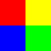
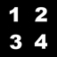
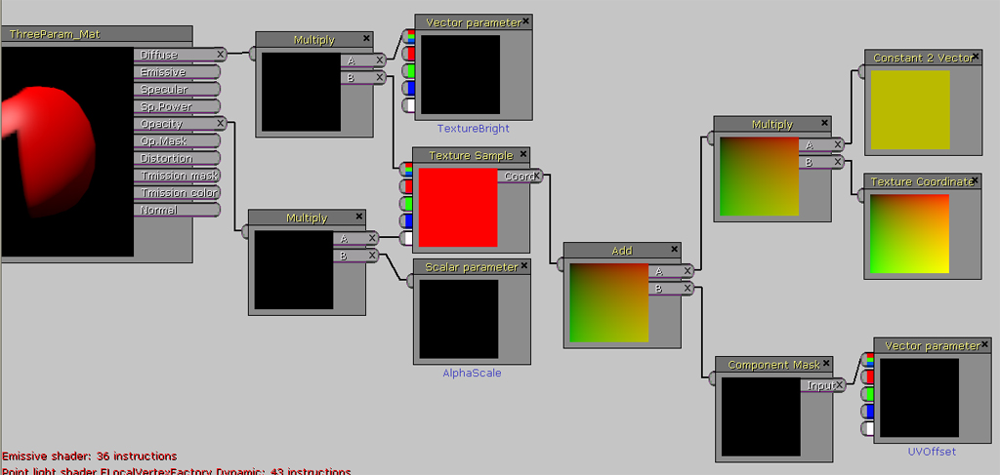
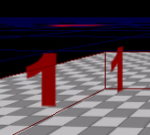
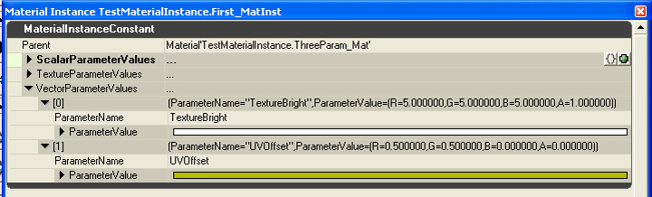
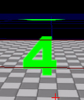
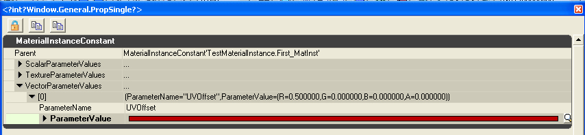
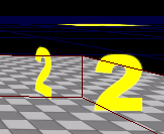
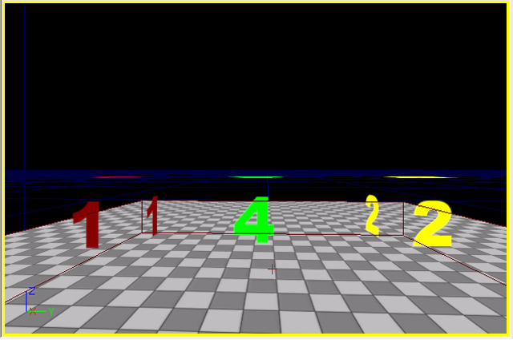

Material Instance Constant Parameter Inheritance
Material Instance Constant Parameter Inheritance
Overview
The MaterialInstanceConstant object allows for users to override the defined parameters set on a material, creating customized instances of a given material.
By utilizing certain expressions in your materials, you can provide parameters that can be supplied on a per-instance basis. These expressions include the following:
| MaterialExpression | Description |
|---|
| ScalarParameter | Supplies a single float user-definable value. Useful for alpha values, multipliers, etc. |
| VectorParameter | Supplies a four-float user-definable value. Useful for color and 2, 3, or 4 component operations such as UVOffset. |
| TextureSampleParameter2D | Supplies a Texture2D user-definable value. Useful for creating a single material that can be used with a different texture per-instance. |
| TextureSampleParameter3D | Supplies a Texture3D user-definable value. |
| TextureSampleParameterCube | Supplies a TextureCube user-definable value. |
Each MaterialInstanceConstant has a pointer to its Parent, from whom it inherits parameters it doesn't override. The parent can be either a Material or another MaterialInstanceConstant. This system allows for setting up some interesting chains of inheritance to expand your available effects.
This document will provide an example of how the inheritance of these parameters occurs in a multiple-inheritance setup. A material that utilizes a special texture will be created and inherited instances will demonstrate the flexibility of the system.
The Source Texture
The source texture utilized, ColorQuarters.tga, is a simple four-color image with numbers embedded in the alpha channel. These are shown below:

Figure 1. ColorQuarters.tga - RGB image

Figure 2. ColorQuarters.tga - Alpha channel
When applied to an object using a material with the BlendMode set to BLEND_Translucent or BLEND_Masked, the image will display the numbers 1-4 in red, yellow, blue, and green, respectively.
The Material
A material is created, ThreeParam_Mat, that utilizes the above texture, cropping the UV coordinates such that only one of the four quarters is shown at a given time. This is done by scaling the input texture coordinates by (0.5, 0.5). The result of just this scaling will provide a resulting `image' of a red `1' (provided the blend mode is set properly).
Three user-definable parameters will be inserted in the material to demonstrate the inheritance chain.
The first parameter, UVOffset, is a vector parameter that is added to the scaled texture coordinates. The parameter is supplied through a MaterialExpressionVectorParameter instance with the parameter name set to "UVOffset". The value from this expression is run through a ComponentMask that only passes through the X and Y values. The result is the added to the scaled UV values to `shift' the sub-image of the texture that is used. For example, if (0.5, 0.0) is set in the UVOffset parameter, the texture will have the upper-right quadrant sampled. The default value for UVOffset is set to (0.0, 0.0, 0.0, 0.0), giving no texture offset.
This final calculated texture coordinate is passed into the TextureSample expression, which has the texture set to the source image.
The second parameter, TextureBright, is a vector parameter that is multiplied with the RGB output of the texture sample to `brighten' (or darken...) the resulting image. The parameter is supplied through a MaterialExpressionVectorParameter instance with the parameter name set to "TextureBright". The output of this expression is fed, along with the RGB output of the texture into a Multiply expression. The result of the multiply is then used as the final Diffuse value for the material. The default value for TextureBright is set to (1.0, 1.0, 1.0, 1.0), which will have no brightening effect on the texture.
The third parameter, AlphaScale, is a scalar parameter that is multiplied with the Alpha output of the texture sample to scale the final opacity of the image. The parameter is supplied through a MaterialExpressionScalarParameter instance with the parameter name set to "AlphaScale". The output of this expression is fed, along with the Alpha output of the texture into a Multiply expression. The result of the multiply is then used as the final Opacity value for the material. The default value for AlphaScale is set to 1.0, which will have no effect on the alpha of the texture.
The completed material is shown below:

Figure 3. ThreeParam_Mat in the Material Editor
When this material is applied `as-is' to a static mesh, in this case the default editor cube, the result is shown below:

Figure 4. ThreeParam_Mat applied to a static mesh.
As can be seen, the sub-image from the texture is the upper-left corner of the image. The default values result in no brightening, no offsetting, and no alpha scaling of the image.
The First MateriaInstanceConstant Object
A MaterialInstanceConstant is now created, First_MatInst, and has its parent set to the ThreeParam_Mat. Two vector parameter values are set as well, in order to override the default parameters of the parent material.
The first is named "TextureBright", and the value is set to (5.0, 5.0, 5.0, 1.0). This value will override the parent material setting of (1.0, 1.0, 1.0, 1.0) and should result in the texture being `brightened' by a factor of 5.
The second is named "UVOffset", and the value is set to (0.5, 0.5, 0.0, 0.0). This value will override the parent material setting of (0.0, 0.0, 0.0, 0.0) and should result in the texture sample being shifted to the lower-right of the image, displaying a green `4'.
The properties of this MaterialInstanceConstant are displayed below:

Figure 5. First_MatInst properties.
When this material instance contant is applied to a static mesh, the result is shown below:

Figure 6. First_MatInst applied to a static mesh.
As can be seen, the sub-image from the texture is the lower-right corner of the image. The texture is `brighter' than the cube shown in Fig. 4 as well - so our instance constant is working correctly.
The Second MateriaInstanceConstant Object
A second MaterialInstanceConstant is now created, Second_MatInst, and has its parent set to the First_MatInst MaterialInstanceConstant. A single vector parameter value is set as well, in order to override the parameters of its parent.
The parameter is named "TextureBright", and the value is set to (5.0, 5.0, 5.0, 1.0). This value will override the parent material setting of (1.0, 1.0, 1.0, 1.0) and should result in the texture being `brightened' by a factor of 5.
The parameter is named "UVOffset", and the value is set to (0.5, 0.0, 0.0, 0.0). This value will override the parent material setting of (0.5, 0.5, 0.0, 0.0) and should result in the texture sample being shifted to the upper-right of the image, displaying a yellow `2'.
The properties of this MaterialInstanceConstant are displayed below:

Figure 7. Second_MatInst properties.
When this material instance contant is applied to a static mesh, the result is shown below:

Figure 8. Second_MatInst applied to a static mesh.
As can be seen, the sub-image from the texture is the upper-right corner of the image. The texture is `brighter' than the cube shown in Fig. 4 as well - using the value supplied by First_MatInst, so our instance constant is working correctly.
Summary
Each cube displayed utilizes the same material, but results in different appearances thanks to the usage of the MaterialInstanceConstant. When chained together, they can be used to provide a variety of effects from the same base material.
For this example, a material was created that contained three parameters available for over-ride by MaterialInstanceConstant usage.
The chain of inheritance setup is as follows ('-->' represents `parent of'):
ThreeParamMat --> First_MatInst --> Second_MatInst.
Below is a screen shot of all three cubes used in this explanation:

Figure 9. All three example cubes
The table below details the source where each cube gets is parameters from:
| Cube | Material Applied | TextureBright | UVOffset | AlphaScale |
|---|
| Left-most | ThreeParam_Mat | ThreeParam_Mat | ThreeParam_Mat | ThreeParam_Mat |
| Center | First_MatInst | First_MatInst | First_MatInst | ThreeParam_Mat |
| Right-most | Second_MatInst | First_MatInst | Second_MatInst | ThreeParam_Mat |
Important!
You are viewing documentation for the Unreal Development Kit (UDK).
If you are looking for the Unreal Engine 4 documentation, please visit the Unreal Engine 4 Documentation site.